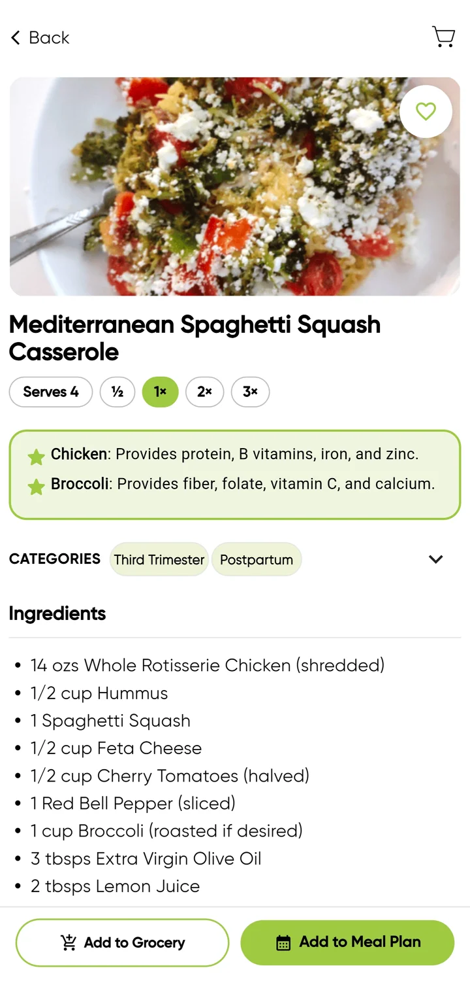

Decision 01
The recipe as a decision tool
- Problem
- A recipe tells you how to cook something, not whether it’s right for you now.
- Hypothesis
- A recipe can support several decisions at once: is this for me, is it right for my stage, how much do I need, what do I buy, and do I want it in my plan.
- Direction
- Set by the founder: recipes should show why they suit your stage.
- My design
- The why-it’s-good box sits above the ingredients, and the two actions stay fixed at the bottom.
- Why
- The question people bring is about their stage. The recipe answers it before the ingredient list starts.
- Trade-off
- Some visual simplicity. The screen is more information-dense than a recipe on its own, but people can decide and take the next step without leaving it.
On the screen
- A highlighted box on why key ingredients matter
- Stage categories: Third Trimester, Postpartum
- A serving scaler: ½, 1×, 2×, 3×
- Two actions: Add to Grocery, Add to Meal Plan